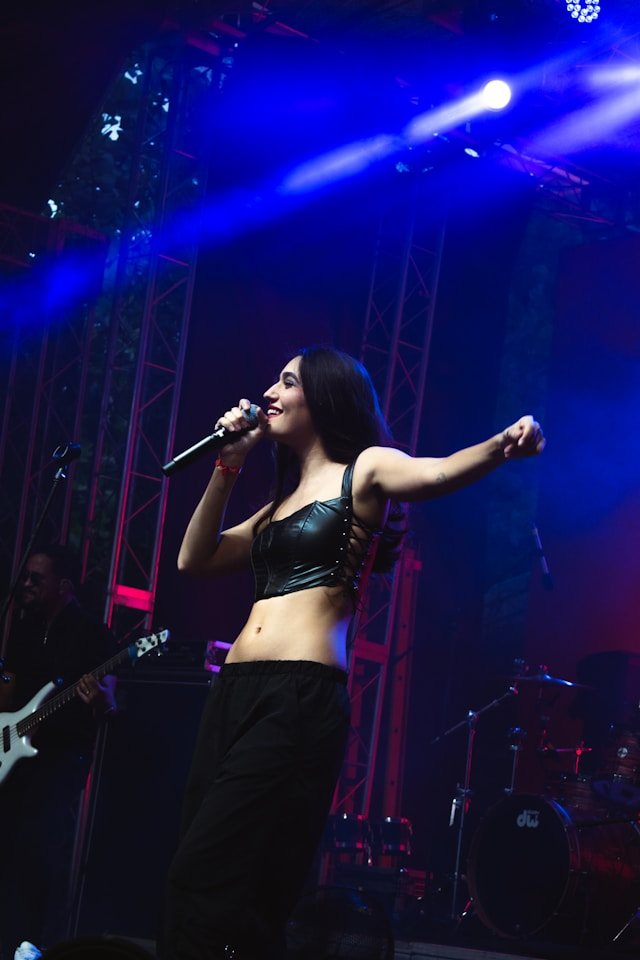
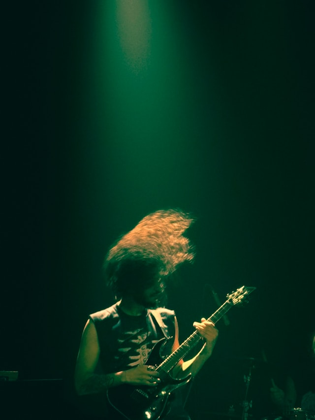
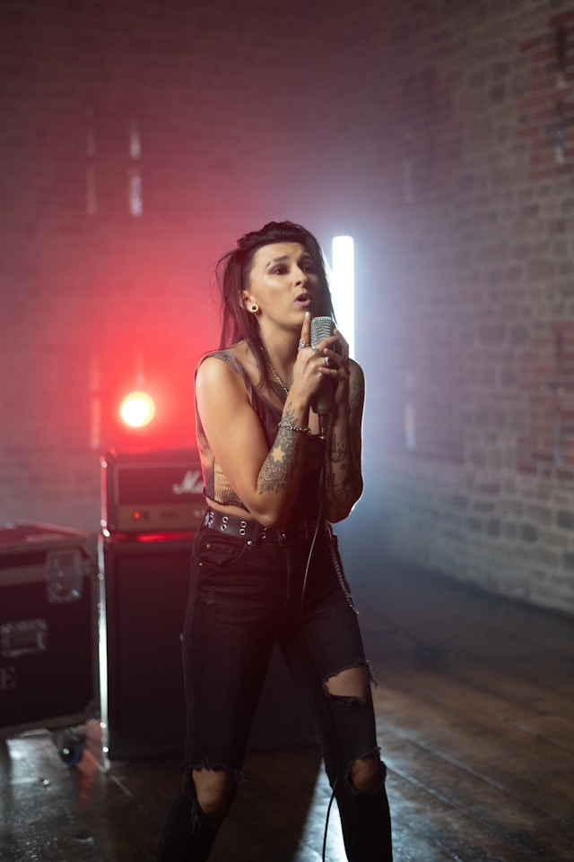
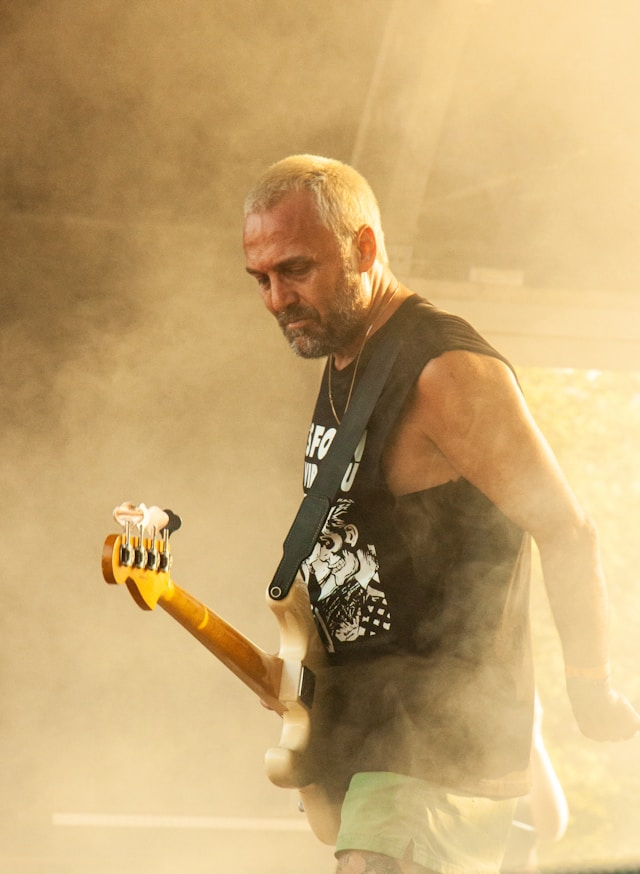

Meet the Band🤘
AJ
AJ
Drums & Vocals
Band member since 2020
AJ Walker was discovered in 2003 by manager Richard Wallis, who signed the 14-year-old to a two-year deal. At the time she was writing pop songs and playing drums in a grunge band part time. The label wanted to make her a solo pop artist, but AJ objected to this, saying that she wanted to be part of a band and play grunge music. Thia all changed when she met Joey and Blax and moved into the metal scene.
Joey
Joey
Electric Guitar & Vocals
Band member since 2008
Joey lived for music from a young age. Joey started playing the guitar in primary school and transitioned to electric guitar in highschool. Joey played in multiple small bands before meeting Blax and forming Zed Leppelin. Joey is notorious for shying away from the camera and avoiding pictures at all costs.
Rio
Rio
Electric Guitar & Vocals
Band member since 2020
Rio Alvero has said that "music is where I can be me". She's notable for her brash, overtly sexual persona and subversive humour in lyrics, performances and media interviews. Rio has famous parents and has been surrounded by the industry her entire life - mother Eva Alvero is a singer/songwriter and father Emilio Alvero is a movie director.
Blax
Blax
Bass Player
Band member since 2008
Blaxall Blax
Myers was more focused on rugby than music as a teenager. Blax didn't find his sound until he attended University and roomed with a bass player named Doug Frugell who has gone on to fame of his own. Blax doesn't shy away from having a physical presence on and off the stage, having his share of controversial run-ins with concert goes.